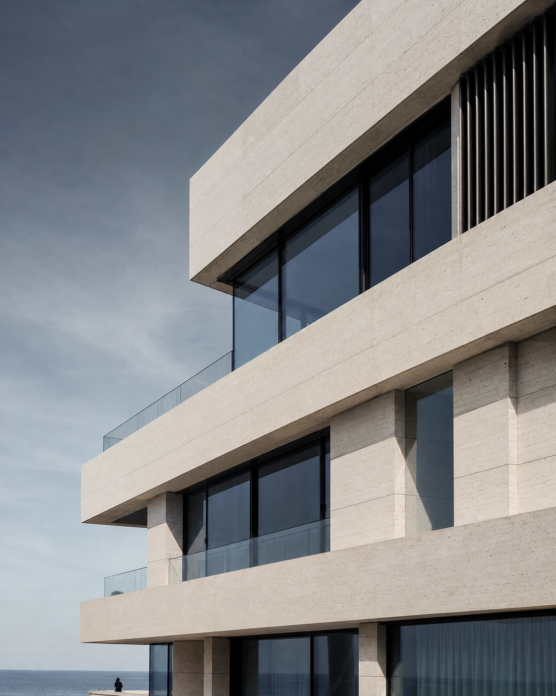

РАБОТАЛИ С РЕМОНТНО-СТРОИТЕЛЬНОЙ КОМПАНИЕЙ / DIGITAL / ИСПАНИЯ
Комплексная digital-упаковка
ремонтно-строительной компании
в Валенсии.
Компания росла за счёт рекомендаций, но почти не присутствовала в digital. Нужно было собрать бренд, сайт, каналы коммуникации и основу для масштабирования.
БрендингСайтGoogle MapsАналитикаTelegram / WhatsApp
